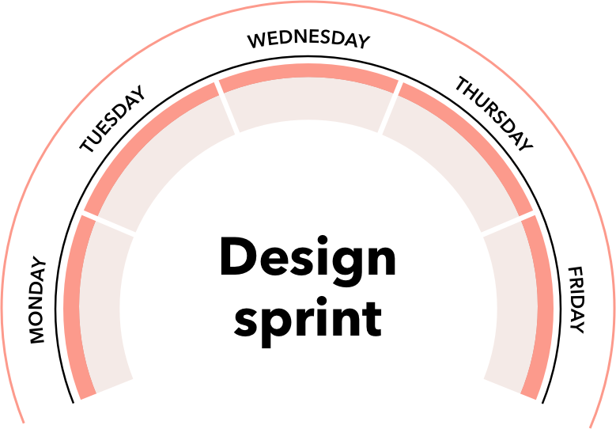

Project Background
The mockups shown are the result of a week-long design sprint I helped facilitate and participated in for one of the largest grocery retailers in the U.S. who wanted to develop an app that allowed its customers to order meals for delivery and pick-up.
I have facilitated a number of these sprints and can speak to the level of efficacy they produce. While these sprints follow a process that reflects the tenants of a google design sprint, they are altered to focus more on actionable outcomes for large stakeholder groups.
Our Goal:
To rapidly define, iterate, and develop a prototype within five days. The final prototype will help develop clarity and stakeholder buy-in, while also jumpstarting a product plan.
Definition
Most often, the challenge with any project is producing buy-in from many stakeholders who each hold unique viewpoints, goals, and objectives. The success in these sprints is also the most challenging part, producing a consensus and determined goals from C-Level partners (in this case, upwards of 80 stakeholder participants). Beyond these challenges, creating and testing a minimum viable product (MVP) in five days is a highly ambitious goal.
Before the start of our design sprint, we circulated a 250-person survey that aimed to better understand customer motivations, frustrations, and values when using similar apps. The following Monday, we began a 1-week Practical Design Sprint, culminating in 10 rounds of user testing on 2 high-fidelity prototypes.
Monday
Workshop
- Personas
- Business objectives
- Value statement
- Prioritized epics
- User journey
- ROAM risk registry
Tuesday
UX Design
Wednesday
UI Design
Thursday
Prototyping
Friday
Validation
- User testing
- Results presentation

Monday
Workshop
Before the start of our design sprint we circulated a 250-person survey aimed at better understanding customer motivations and then presented it on Monday. Day one of the sprint is all about the stakeholders. For eight hours, get everyone in a room and focus on making collective decisions that will drive the rest of the sprint. This is handled using the same methodology as a Google Design Sprint, in that each objective is first solved individually, then presented and voted on within groups. Then groups present to the majority, and then a vote is made by the majority. This employs a combination of dot voting, hand voting (ex: value vs effort), and a risk registry.
Tuesday - Wednesday
Design
Next, all of the individual pieces of the Monday workshop culminate in defining the audience, prioritized features, and a rough user journey. We wireframe the design on paper, then shift designs into Sketch. A small team of designers collaborate in creating a rough outline for how features and the product might work. Simultaneously, other designers create a visual design language to match the voice and tone of the product to its audience and can be applied to wireframes quickly. A quick daily check-in with stakeholders takes place, to allow stakeholders insight into the overall process and its progress toward their MVP product.
Thursday
Prototyping
With rough mockups in hand, create prototypes to test the core concepts. In this design sprint, there was an A/B split test for the app's information architecture.
Friday
Validation
In the morning, our practical design sprint culminates in 10 rounds of user testing on 2 high-fidelity prototypes. Findings that were both minimal and critical to the product's success were recorded and presented to the client.